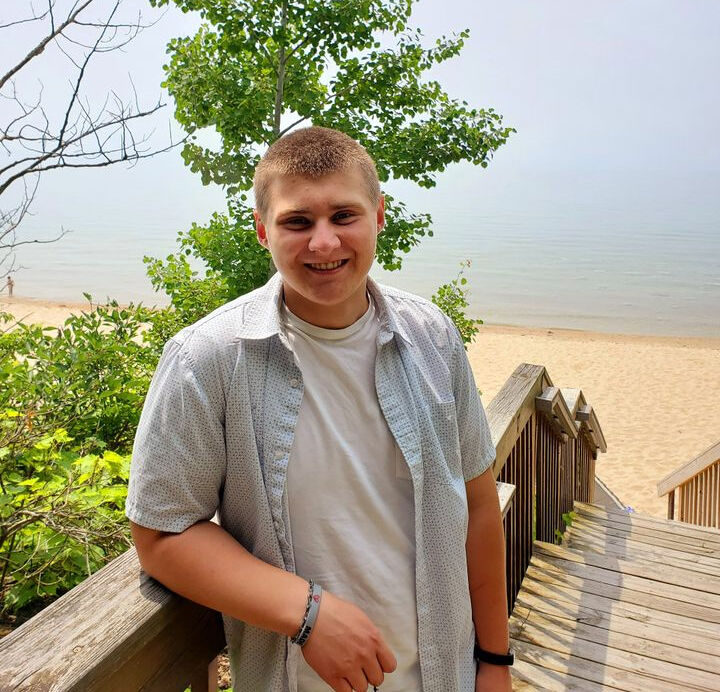
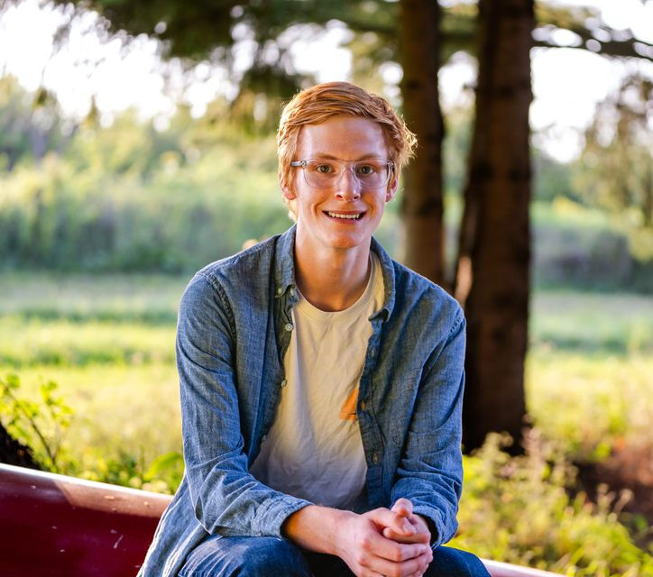

Our Mission
Jaeden Wang
Prior to the Compassionate Hearts Initiative (CHI),
Jaeden has worked in a multitude of leadership,
adminstrative, service organizations, and healthcare
roles. He has worked with Meals on Wheels Western
Michigan for the past three years, serving through
recruitment, assisting their nutrition program through
an administrative role, and leading volunteer groups. He
would later become among one of three nominees for the
Volunteer of the Year Award. Jaeden currently works as a
Nutrition Clinican at Mary Free Bed Hospital (being the
only and first minor hired) and as a Nursing Aide at a
large nursing home facility.Additionally, Jaeden has
previously worked as a Lead Intern at Michigan’s League
of Conservation Voters, Nutrition Tech. at Corewell
Health, and Grandville High School Class President. The
exposure to administrative, clinical settings and
vulnerable populations would inspire his founding of
CHI. Upon graduation, Jaeden plans on attending Norwich
University (The Military College of Vermont) to become
an Army Nurse Corps Officer through ROTC. In his free
time, he enjoys working out, spending time with friends,
traveling, and scuba diving.

Eldin Causevic
Prior to CHI, I was a youth leader in my youth group at
St. Pius X, a member of the Knights of Columbus, and a
member of the National Honor Society. I am an active
leader in my church, helping to lead religious events. I
want to serve the homeless to follow the example of
Jesus Christ, and to carry out his mission of serving
the poor. I work at an assisted living facility, serving
the elderly in my community. I feel for the senior
citizens struggling out in the streets, and want to help
them like I do at my job.I wanted to be a part of CHI so
that I could serve the poor in my community. I wanted to
be a part of a group that helped those in need.After
high school I plan on attending the University of St.
Thomas in order to study Philosophy, Catholic Studies,
psychology, and Spanish.
Alexandria Smith
Along with leading CHI’s human resources team Alexandria
spends much of her time mentoring 1st-8th graders in the
art of Praise dance at Madison Square church. She is also
an active member on the Grand Rapids community servicing
as a voting member on the Grand Rapids community
Foundations adult board, as well as a participating member
of the youth grant committee.Alexandria joined CHI, to
help more than just the youth in her community, and hopes
that the work that CHI is doing now will break
generational homelessness or poverty.In Alexandria’s free
time she lives to dance, get to know people and babysit.
Bhavya Yekkala
Outside of CHI, Bhavya participates in many school clubs
pertaining to leadership and volunteering. She has
volunteered with Meals on Wheels before and has learned
many things to help her community. Regarding CHI, Bhavya
is Treasurer and oversees all the financial aspects of
CHI, such as can drives. Bhavya joined CHI to help with
the homeless community which she says is very abundant in
our Grand Rapids community; she hopes to bring these
numbers down through our CHI efforts. As a person, Bhavya
is known to be outgoing and friendly towards others and
the community recognizes her for it. Bhavya is a senior in
high school and plans to attend college after graduation
to pursue a pre-med path.

Micah Dykhuis
Outside of CHI, Micah spends most of his time tutoring
high schoolers and middle schoolers in math and science.
He also organizes student support programs through his
schools NHS chapter as the tutoring coordinator.Micah
joined CHI to work for a better future in Grand Rapids and
to reduce the hardships of homelessness.
-
Sub-menu Item
-
Sub-menu Item
-
Sub-menu Item
Prior to the Compassionate Hearts Initiative (CHI), Jaeden has
worked in a multitude of leadership, adminstrative, service
organizations, and healthcare roles. He has worked with Meals
on Wheels Western Michigan for the past three years, serving
through recruitment, assisting their nutrition program through
an administrative role, and leading volunteer groups. He would
later become among one of three nominees for the Volunteer of
the Year Award. Jaeden currently works as a Nutrition Clinican
at Mary Free Bed Hospital (being the only and first minor
hired) and as a Nursing Aide at a large nursing home facility.
Additionally, Jaeden has previously worked as a Lead Intern at Michigan’s League of Conservation Voters, Nutrition Tech. at Corewell Health, and Grandville High School Class President. The exposure to administrative, clinical settings and vulnerable populations would inspire his founding of CHI. Upon graduation, Jaeden plans on attending Norwich University (The Military College of Vermont) to become an Army Nurse Corps Officer through ROTC. In his free time, he enjoys working out, spending time with friends, traveling, and scuba diving. Jaeden Wang
Additionally, Jaeden has previously worked as a Lead Intern at Michigan’s League of Conservation Voters, Nutrition Tech. at Corewell Health, and Grandville High School Class President. The exposure to administrative, clinical settings and vulnerable populations would inspire his founding of CHI. Upon graduation, Jaeden plans on attending Norwich University (The Military College of Vermont) to become an Army Nurse Corps Officer through ROTC. In his free time, he enjoys working out, spending time with friends, traveling, and scuba diving. Jaeden Wang
Prior to CHI, I was a youth leader in my youth group at St.
Pius X, a member of the Knights of Columbus, and a member of
the National Honor Society. I am an active leader in my
church, helping to lead religious events. I want to serve the
homeless to follow the example of Jesus Christ, and to carry
out his mission of serving the poor. I work at an assisted
living facility, serving the elderly in my community. I feel
for the senior citizens struggling out in the streets, and
want to help them like I do at my job.
I wanted to be a part of CHI so that I could serve the poor in my community. I wanted to be a part of a group that helped those in need.
After high school I plan on attending the University of St. Thomas in order to study Philosophy, Catholic Studies, psychology, and Spanish. Eldin Causevic
I wanted to be a part of CHI so that I could serve the poor in my community. I wanted to be a part of a group that helped those in need.
After high school I plan on attending the University of St. Thomas in order to study Philosophy, Catholic Studies, psychology, and Spanish. Eldin Causevic
Along with leading CHI’s human resources team Alexandria
spends much of her time mentoring 1st-8th graders in the art
of Praise dance at Madison Square church. She is also an
active member on the Grand Rapids community servicing as a
voting member on the Grand Rapids community Foundations adult
board, as well as a participating member of the youth grant
committee.
Alexandria joined CHI, to help more than just the youth in her community, and hopes that the work that CHI is doing now will break generational homelessness or poverty.
In Alexandria’s free time she lives to dance, get to know people and babysit. Alexandria Smith
Alexandria joined CHI, to help more than just the youth in her community, and hopes that the work that CHI is doing now will break generational homelessness or poverty.
In Alexandria’s free time she lives to dance, get to know people and babysit. Alexandria Smith
Outside of CHI, Bhavya participates in many school clubs
pertaining to leadership and volunteering. She has volunteered
with Meals on Wheels before and has learned many things to help
her community. Regarding CHI, Bhavya is Treasurer and oversees
all the financial aspects of CHI, such as can drives. Bhavya
joined CHI to help with the homeless community which she says is
very abundant in our Grand Rapids community; she hopes to bring
these numbers down through our CHI efforts. As a person, Bhavya
is known to be outgoing and friendly towards others and the
community recognizes her for it. Bhavya is a senior in high
school and plans to attend college after graduation to pursue a
pre-med path.
Bhavya Yekkala
Outside of CHI, Micah spends most of his time tutoring high
schoolers and middle schoolers in math and science. He also
organizes student support programs through his schools NHS
chapter as the tutoring coordinator.
Micah joined CHI to work for a better future in Grand Rapids and to reduce the hardships of homelessness. Micah Dykhuis
Micah joined CHI to work for a better future in Grand Rapids and to reduce the hardships of homelessness. Micah Dykhuis